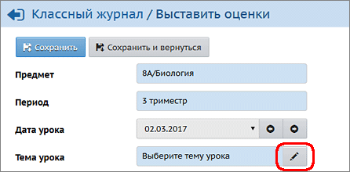
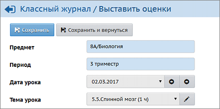
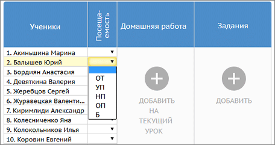
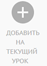
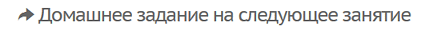
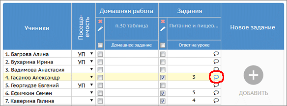
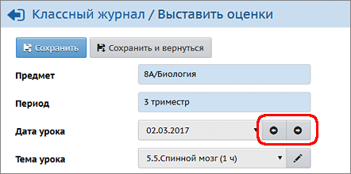

Если на эту дату ещё не выбрана тема урока
| Если по данному предмету используется календарно-тематическое планирование (КТП), но тема урока пока не выбрана, то вы увидите надпись "Выберите тему урока" с кнопкой карандаша:
|
 |
|
|
| Нажав кнопку "карандаш", вы увидите список тем уроков, в котором будет предложена первая пока не использованная тема из КТП:
|
 |
|
|
| Если тема урока уже выбрана, то кнопка "карандаш" загружает список тем уроков, чтобы можно было выбрать другую тему.
|
Действия учителя в ходе проведения урока
1. Отметить отсутствующих на уроке
|
 |
2. Выставить оценки за домашнюю работу
|
 | ||||||||||||
3. Провести опрос учащихся, контрольную работу или другой вид работы на уроке
|
|
4. Назначить домашнее задание на следующее занятие
|
 |
Комментарий к оценке
Есть возможность написать текстовый комментарий к любой оценке, или просто текстовый комментарий, даже если оценки нет.
| 1. Наведите мышь на нужный столбец с полями оценок, появятся пиктограммы для комментариев.
|
| 2. Щёлкните мышью на пиктограмму в нужной строке, как на иллюстрации ниже.
|
| 3. Откроется окно для добавления комментария, в котором нужно вписать нужный текст и нажать кнопку Добавить. (Точно так же можно отредактировать комментарий, если он был введён ранее.)
|

Этот комментарий будет доступен для ученика и родителя в разделе "Дневник".
Как быстро перейти в другой столбец журнала
Для перехода в другой столбец классного журнала, выберите дату урока из списка; а в соседний столбец можно перейти при помощи стрелок:

Двойная оценка за один урок
Чтобы выставить в системе две оценки за один урок (например, за диктант по русскому языку), необходимо на этом экране добавить два столбца с оценками. После возврата в экран Классный журнал вы увидите, что в столбце выведены сразу две оценки.
Особенности домашнего задания
Дополнительные возможности для домашних заданий описаны здесь.
Автоматическое заполнение темы задания
При назначении заданий (кроме домашних) поле "Тема задания" автоматически заполняется темой урока из КТП, если соблюдены следующие условия:
| · | для данного класса и предмета выбран вариант КТП,
|
| · | выбрана Тема урока в этот день.
|
Максимально возможная длина поля "Тема задания" - 400 символов.
Как назначить задание другого типа, который отсутствует в списке?
При назначении заданий открывается список типов заданий: "Ответ на уроке", "Самостоятельная работа", "Контрольная работа" и т.д. Пользователь Администратор сервера может расширить этот список типов заданий в своём интерфейсе при помощи экрана "Справочники".
Можно ли выставлять оценки НЕ по 5-балльной шкале
Да, в тех школах, где используется не пятибалльная система, можно пользоваться той шкалой, которая принята (например, 12-балльная или 100-балльная система). Это определяется на странице Настройки школы параметрами минимальная оценка и максимальная оценка.
Где выставляются оценки за учебный период
Оценки за учебный период (четверть, триместр, полугодие), а также за год, экзамен и по итогам года - выставляются на отдельном экране Итоговые отметки.